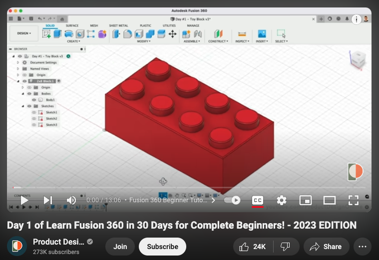
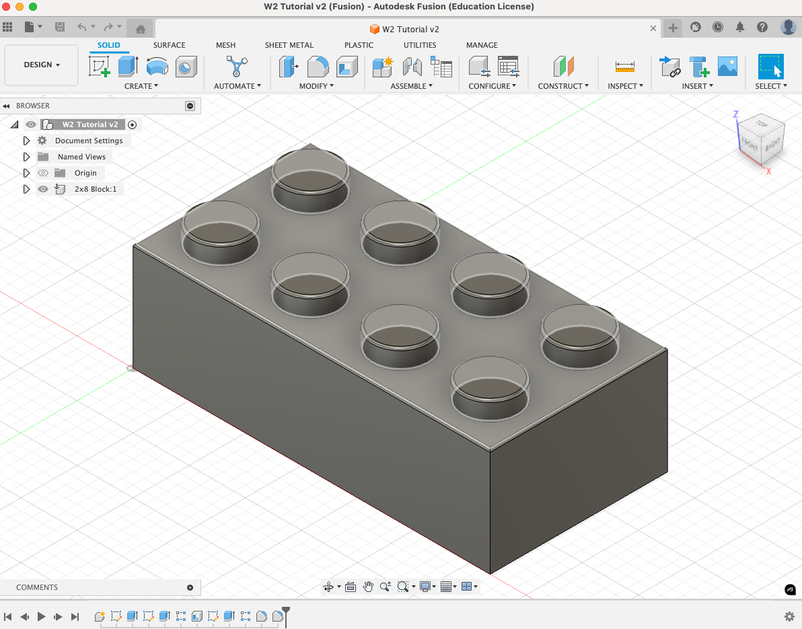
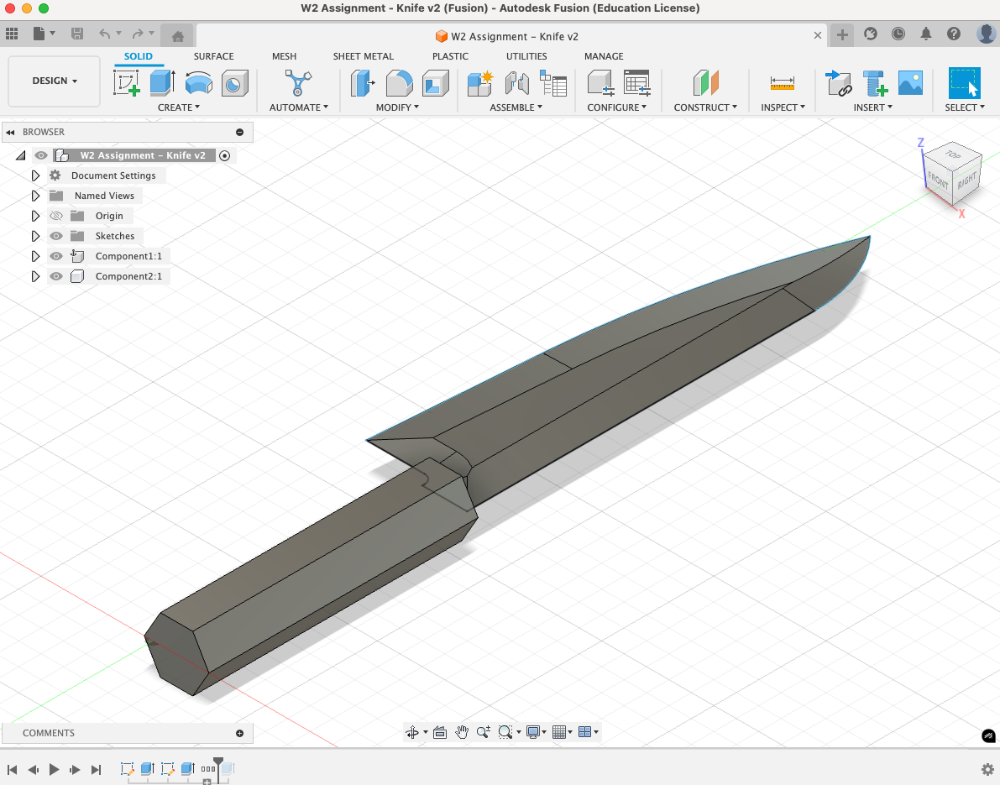
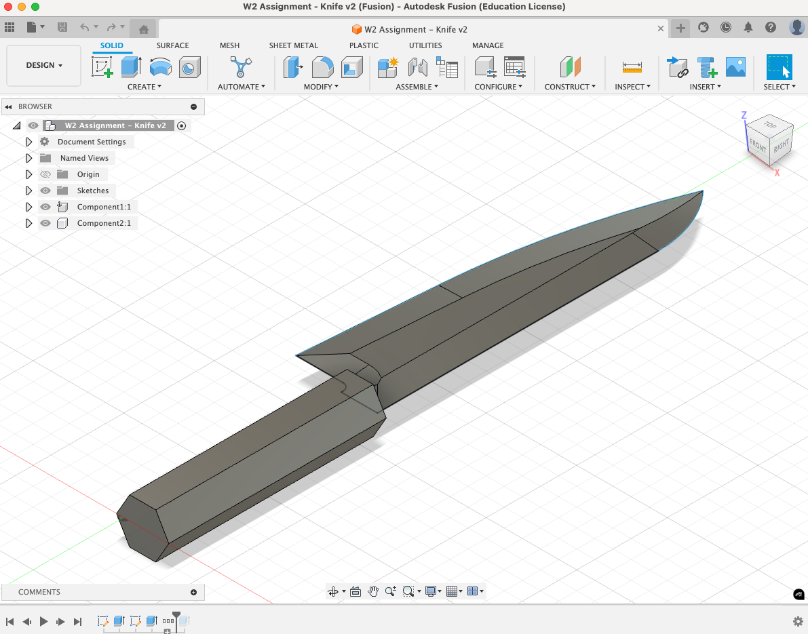
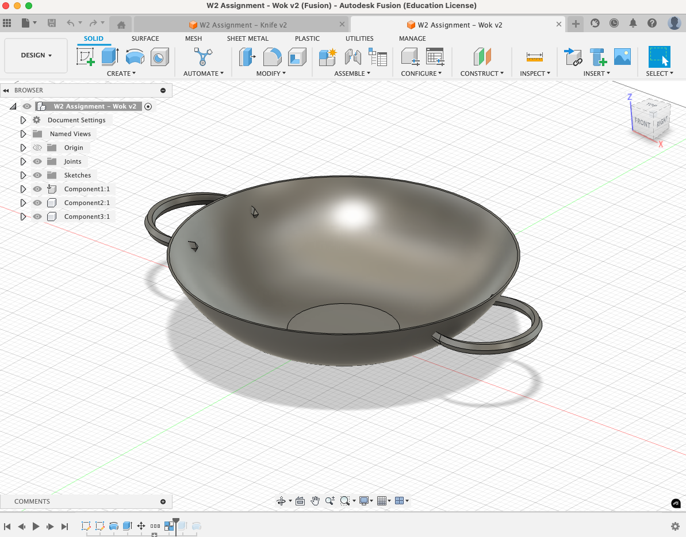
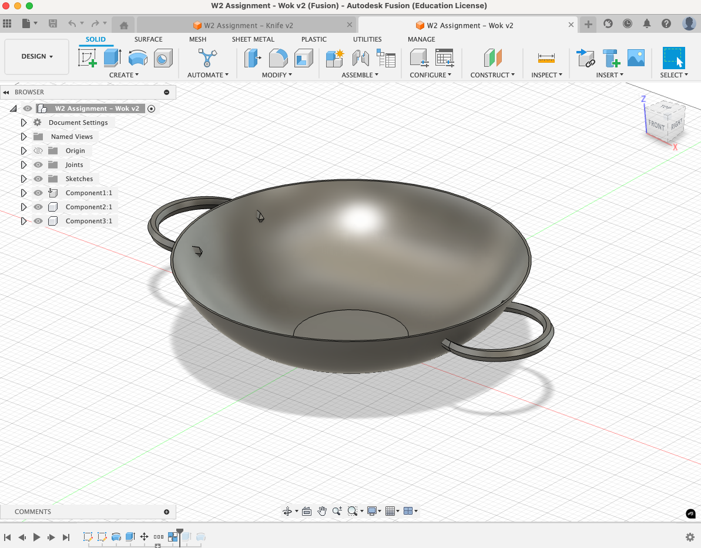
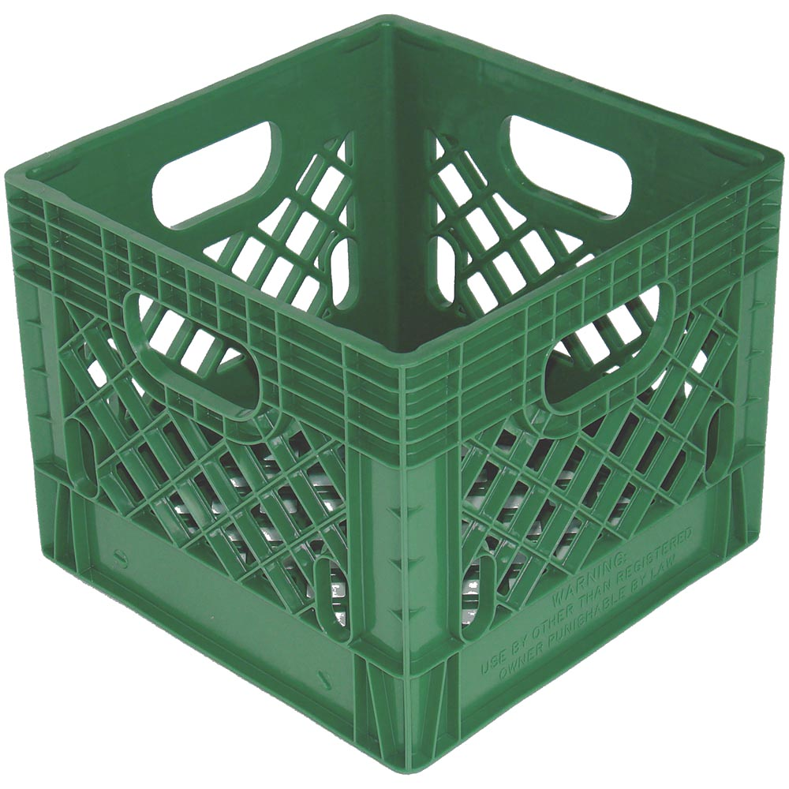
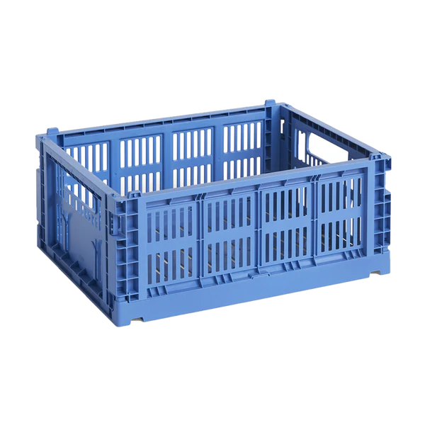

/week two: 2D design & cutting
# fusion 360 tutorial
# --------------------------------------------------------------------------------
i choose to make the lego block from one of the
recommended tutorials.
this short tutorial covered a lot of most useful basics to fusion. my favourite new
function, that I hadn't used before, is shell, which hollows out a surface to a certain thickness.
definitely will save this model for when we get to 3d printing. I foresee a lego paper weight.
tutorial

completed model

# household objects
# --------------------------------------------------------------------------------
i chose two objects from home to model: one of my kitchen knives and a wok.
these objects were interesting to me because the geometry seemed doable in fusion
but not so complicated that I couldn't do it.
kitchen knife and model
 

i wasn't able to capture all dimensions using calipers so had to just estimate
dimensions based on general proportions. i felt pretty good with how it turned out.
a couple of key details that i wasn't quite able to capture was: (1) the handles
and their pins on the internal side of the wok. (2) the exact tapering of the knife blade
because of the blend of curved and straight taper.
cooking wok and model
 

# the mighty milk crate
# --------------------------------------------------------------------------------
your fun fact for the week is that the milk crate was invented in australia in the 1950s.
as a proud australian who consumes an above average amount of milk, i wanted to make my own.
it represents indestrucible multi-functional industrialisation to me, so i wanted to channel
that energy into PS70. more stylish and modern versions have been made by companies like
hay (see photo below).


following this weeks lab, i had an idea for modelling teeth using a rectangular pattern
but i wanted something slightly sturdier. instead i decided to model teeth to fit into
slots. i modelled this in fusion as five different panels to create a box without a lid.
the parameters came in handy when i got to the laser printer and realised the sizing was
off. i had to rescale and tweak but thankfully it worked out in the end. i also learnt my
lesson about allowing time for the laser cutter queue!